基礎題
舞臺劇演出時，通常會讓周遭的環境昏暗，再用聚光燈來照射演員，讓觀眾能看見演員的表演。有關觀眾能看見演員表演的敘述，下列何者最合理？
- (A) 聚光燈發出的光線照射在演員上，演員吸收這些光線，因此觀眾能看見演員
- (B) 聚光燈發出的光線照射在演員上，演員折射這些光線，因此觀眾能看見演員
- (C) 聚光燈發出的光線照射在演員上，演員反射這些光線，因此觀眾能看見演員
- (D) 觀眾眼睛發出的光線照射在演員上，演員折射這些光線，因此觀眾能看見演員
看答案與詳解
答案：(C)
(A) ✘ 被吸收的光不會進入眼睛，吸收愈多看起來愈暗。
(B) ✘ 折射是光穿過不同介質時偏折，演員不透明，光不會穿過演員。
(C) ✔ 聚光燈的光照到演員，演員把光反射（漫反射）到觀眾眼中。
(D) ✘ 眼睛不會發出光線。
〔易錯〕以為眼睛會「射出視線」去看東西
下列選項中的四個活動，光線經過「 」中的裝置後，哪一個不會改變光的傳播方向？
- (A) 利用「針孔」成像觀察日食
- (B) 利用「放大鏡」觀察校園中的花朵
- (C) 利用「汽車後照鏡」觀察後方的車輛位置
- (D) 利用「三稜鏡」將陽光分散成七種不同顏色的光
看答案與詳解
答案：(A)
(B) ✘ 放大鏡是凸透鏡，光經折射而偏折。
(C) ✘ 後照鏡（凸面鏡）使光反射，方向改變。
(D) ✘ 三稜鏡使光折射並色散，方向改變。
如附圖所示，部分救護車車頭的「救護車」字樣會以附圖車頭上的方式印製，目的是當前方車輛的駕駛透過後視鏡（平面鏡）觀看時，可以看到正確的「救護車」字樣，此現象主要與下列何者最相關？
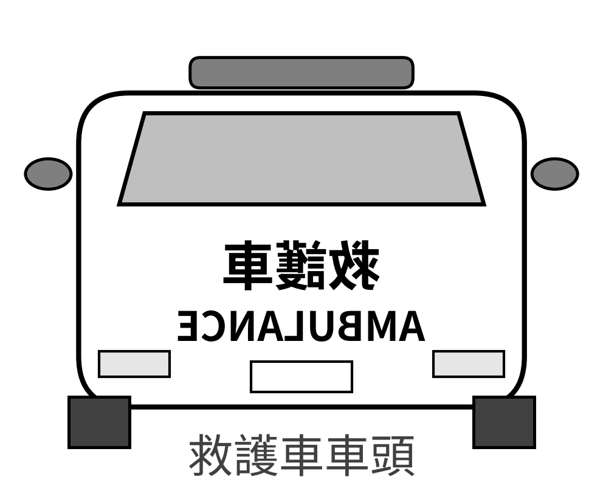
- (A) 光的折射
- (B) 光的反射
- (C) 光的色散
- (D) 光可在真空中傳播
看答案與詳解
答案：(B)
平面鏡成像時像與物左右相反，前車駕駛從後視鏡看到的是字樣的像，再左右反一次 → 變成正確的字。
平面鏡成像是光的反射 → (B)。
(A)(C) ✘ 折射、色散發生在光穿過不同介質時。
(D) ✘ 與光能否在真空中傳播無關。
小傑將光的性質列出如圖(十一)所示，則下列現象的說明或解釋與光的性質之配對，何者最適當？
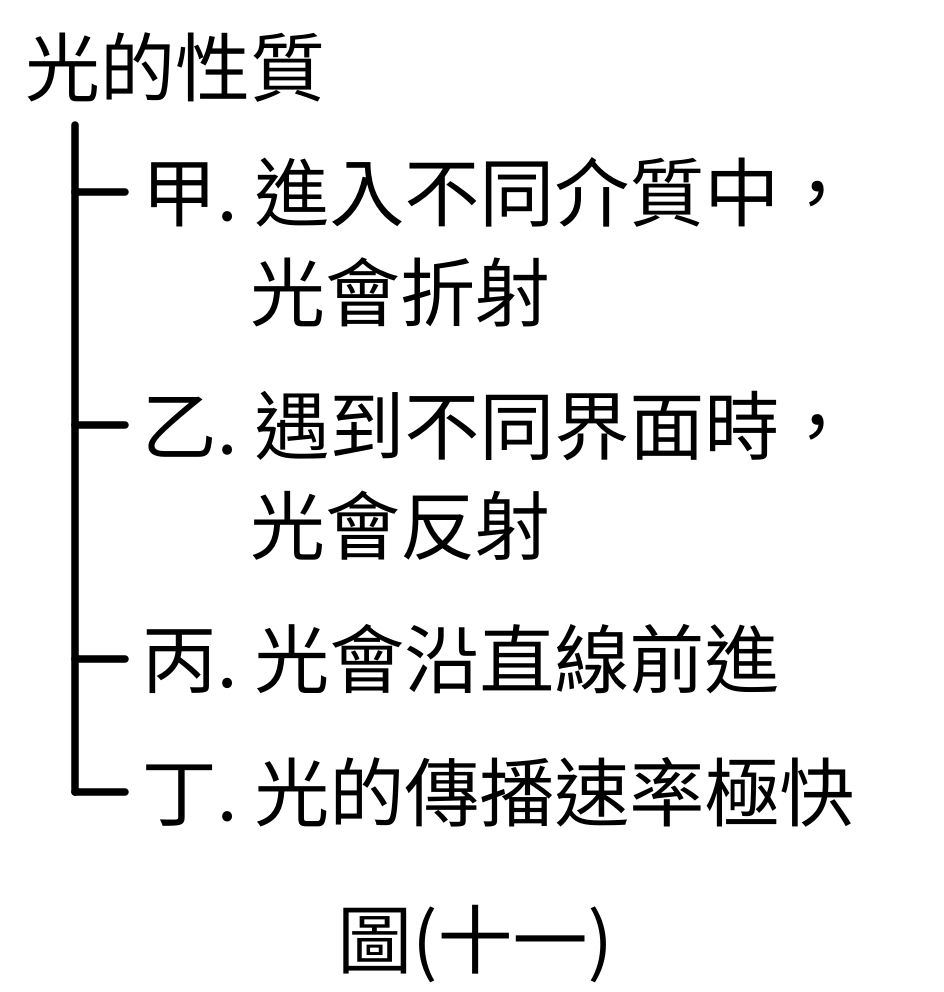
- (A) 煙火在空中爆炸時，會先看到火花再聽到爆炸聲——甲
- (B) 透過近視眼鏡看課本，發現課本的字會變小——乙
- (C) 在地上豎立竿子，可藉由竿影推測太陽方位——丙
- (D) 太陽光透過樹葉間的縫隙，可在地上形成小圓點——丁
看答案與詳解
答案：(C)
(B) ✘ 近視眼鏡是凹透鏡，看到縮小的字是光的折射，應配「甲」。
(C) ✔ 竿影是光被竿子擋住形成的影子，由光的直進（丙）決定影子方向，可推測太陽方位。
(D) ✘ 樹葉縫隙形成的小圓點是太陽的針孔像，由光的直進解釋，應配「丙」。
關於光的傳播與針孔成像的敘述，下列何者正確？
- (A) 光在真空中也可以傳播，故屬於力學波
- (B) 眼睛可看見放在陰影中的物體，表示光並非以直線傳播
- (C) 發光物體的光線通過針孔後，必會在針孔另一端形成大小相同的像
- (D) 發光物體的光線通過針孔後，必會在針孔另一端形成上下顛倒的像
看答案與詳解
答案：(D)
(B) ✘ 陰影中的物體仍會被周圍物體反射來的光照到，它再把光反射進眼睛；光仍沿直線傳播。
(C) ✘ 像長／物長＝像距／物距，像的大小取決於物距與像距，不一定和物體一樣大。
(D) ✔ 光線沿直線通過小孔後上下交叉，形成上下顛倒（左右也相反）的實像。
大華將紅色、藍色、綠色三張色紙置於暗室，他想讓阿威找出紅色色紙，則阿威需使用下列何種顏色的光照射，才可以從暗室中辨別出紅色色紙？
- (A) 藍色光
- (B) 綠色光
- (C) 紅色光
- (D) 使用任何色光均無法辨別出紅色色紙
看答案與詳解
答案：(C)
(A) ✘ 藍光照射：藍紙呈藍色，紅紙與綠紙都呈黑色，無法分辨紅紙與綠紙。
(B) ✘ 綠光照射：綠紙呈綠色，紅紙與藍紙都呈黑色，同樣無法分辨。
(C) ✔ 紅光照射：只有紅紙呈紅色，藍紙、綠紙都呈黑色 → 能找出紅紙。
(D) ✘ 由 (C) 可知可以辨別。
古人會使用一種稱為「陽燧」的器物來取火，它是以銅、錫鑄造而成的工具，一面為凹面，另一面為凸面，其出土的文物如圖(十三)所示。使用時將其中一面對準太陽，持少量乾草置於靠近此面的某個位置，一段時間後便可引燃乾草。關於「陽燧」引燃乾草取火的科學原理，下列敘述何者最合理？
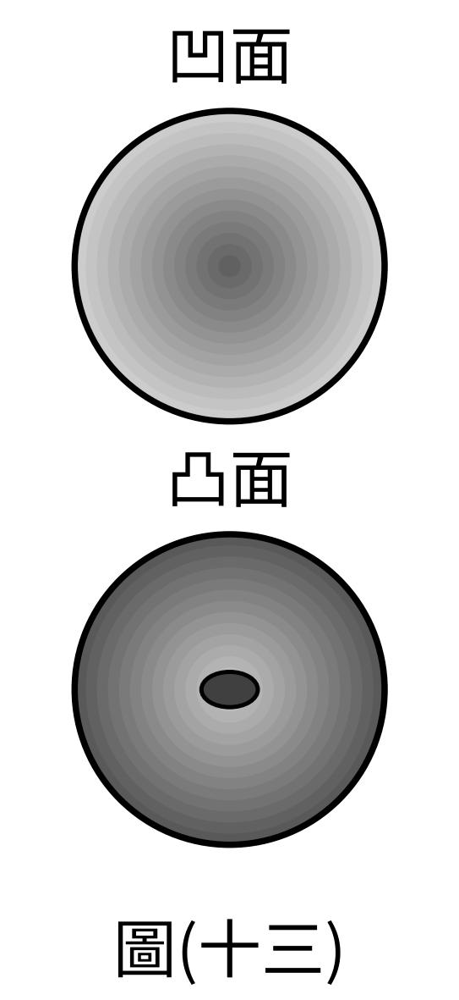
- (A) 利用凸面面對太陽，使陽光因反射而會聚
- (B) 利用凸面面對太陽，使陽光因折射而會聚
- (C) 利用凹面面對太陽，使陽光因反射而會聚
- (D) 利用凹面面對太陽，使陽光因折射而會聚
看答案與詳解
答案：(C)
凹面鏡可把平行的陽光反射會聚到焦點，乾草放在焦點附近溫度升高而燃燒；凸面鏡會使光發散 → 排除 (A)。
故為凹面對太陽、反射會聚 → (C)。
〔易錯〕把凹面鏡（反射會聚）與凸透鏡（折射會聚）混淆
小華手持某透鏡，使陽光透過透鏡照射於地面，他發現陽光在地面會聚成一點時，透鏡與地面的距離為 X cm，如圖(二十四)所示。他再以此透鏡進行透鏡成像實驗，如圖(二十五)所示，則當發光物體置於透鏡前 2X cm 時，物體所形成最清晰的像會落在透鏡後的哪個位置？
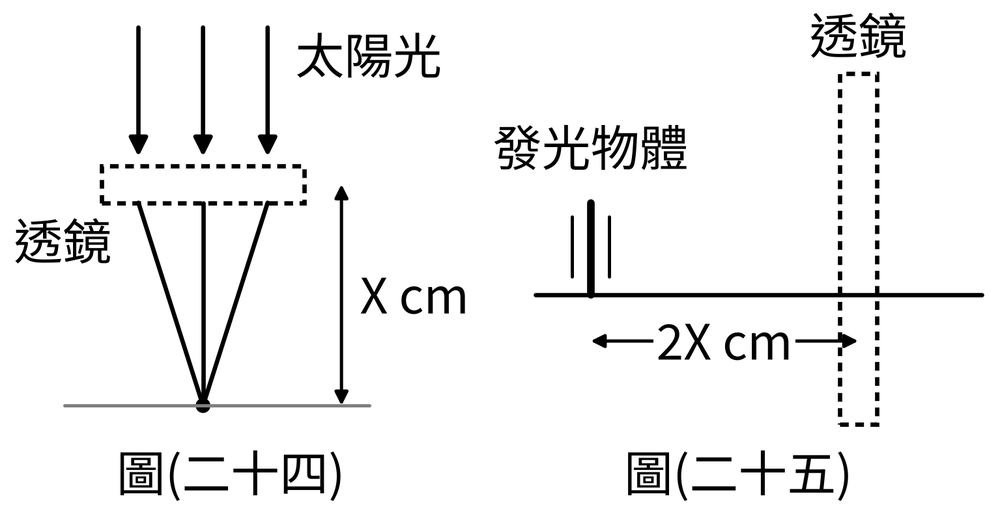
- (A) 不會在透鏡後成像
- (B) X cm～2X cm 之間
- (C) 2X cm 處
- (D) 2X cm 之外
看答案與詳解
答案：(C)
物體放在透鏡前 2X cm＝2f 處 → 在另一側 2f 處成倒立、等大的實像 → (C)。
(A) ✘ 物在焦距外，會在透鏡後成實像。
(B) ✘ 像在 f～2f 之間是物在 2f 外的情形。
(D) ✘ 像在 2f 外是物在 f～2f 之間的情形。
耳鼻喉科醫生為了查看病患耳道中的情形，會使用一種中間有孔的面鏡，稱為「額鏡」，如圖(十六)所示。額鏡可聚光，會將光線反射至耳道中，當醫生的眼睛、額鏡的眼孔與病患的耳道成一直線時，醫生即可看到耳道中的情形，如圖(十七)所示。試問額鏡屬於何種面鏡？又當醫生的眼睛、額鏡的眼孔與病患的耳道成一直線時，醫生可看到耳道中的情形，此現象用光的何種性質解釋最為合理？
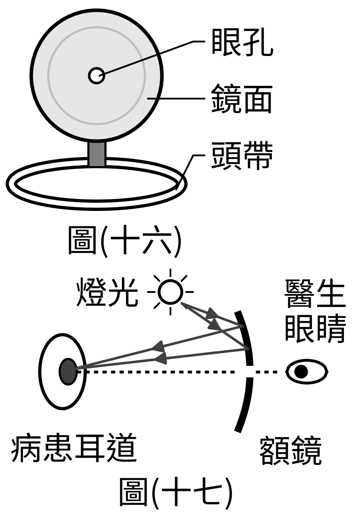
- (A) 凸面鏡；光的折射
- (B) 凸面鏡；光的直進性
- (C) 凹面鏡；光的折射
- (D) 凹面鏡；光的直進性
看答案與詳解
答案：(D)
② 耳道反射出來的光沿直線穿過眼孔進入醫生眼睛，所以三者必須成一直線 → 光的直進性。
故選 (D)。
(A)(C) ✘ 光在空氣中穿過小孔，沒有進入另一種介質，與折射無關。
進階題
以白光照射一張單色圖卡，圖卡反射紅光，吸收其他顏色的光。若改以藍光照射此圖卡，則關於此時圖卡上的色光吸收或反射情形，下列何者最有可能發生？
- (A) 吸收紅光
- (B) 吸收藍光
- (C) 反射綠光
- (D) 反射藍光
看答案與詳解
答案：(B)
改用藍光照射：照到圖卡的只有藍光，藍光被吸收 → 圖卡看起來是黑色 → (B)。
(A) ✘ 此時沒有紅光照到圖卡，談不上吸收紅光。
(C) ✘ 沒有綠光照射，也不會反射綠光。
(D) ✘ 紅色圖卡不反射藍光。
阿斌到某復古風格的餐廳聚餐，他發現餐廳內的牆邊斜立一個鐵製支架，上方圓孔中插入一根木棒，木棒一端懸掛一顆燈泡，另一端頂住牆面使其保持靜止不動，如圖（一）所示。圖（二）表示阿斌從面對此牆面的方向觀察此裝置的情形。若點亮了燈泡，阿斌看到燈泡所造成木棒的影子會落在圖（二）中甲、乙、丙、丁哪一個區域？
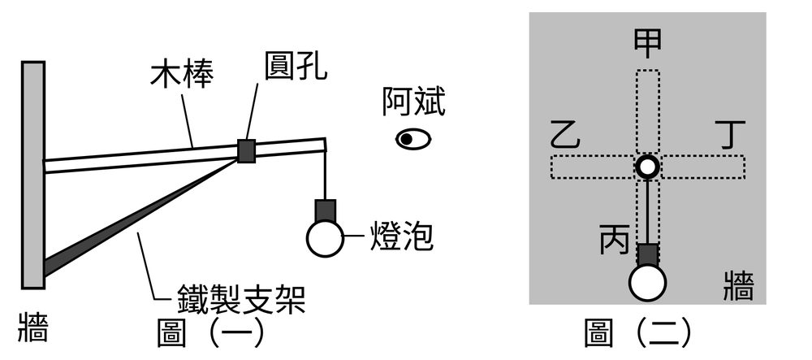
- (A) 甲
- (B) 乙
- (C) 丙
- (D) 丁
看答案與詳解
答案：(A)
燈泡掛在木棒外端的下方，木棒在燈泡的上方，且木棒由外端向牆面延伸。
燈泡發出的光往上照到木棒後被擋住，影子沿「燈泡 → 木棒」的方向延伸，落在牆上圓孔的上方 → 甲區 → (A)。
〔易錯〕以為影子在物體正下方；影子方向要看光源在物體的哪一側
如圖(一)所示，在一面鉛直立著的平面鏡左方水平放置一個九格的棋盤，平面鏡右方表示鏡中所成的像，將一顆棋子「馬」由圖中甲處移至乙處，則平面鏡中所顯示的棋子「馬」，其移動的路徑為下列何者？
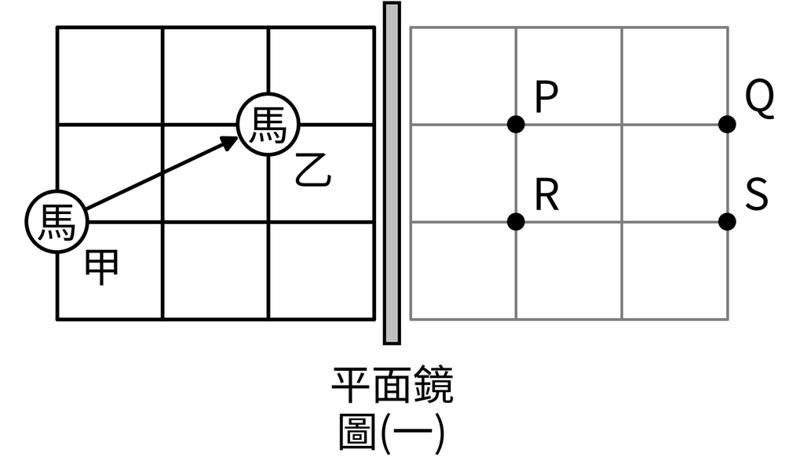
- (A) P → S
- (B) Q → R
- (C) S → P
- (D) R → Q
看答案與詳解
答案：(C)
甲在棋盤最左一條線（離鏡最遠）、由上數第三條橫線 → 像在鏡後最遠的一條線、同一條橫線 → S。
乙在由鏡面數來第二條直線、由上數第二條橫線 → 像在鏡後由鏡面數來第二條直線、同一條橫線 → P。
所以像由 S 移到 P → (C)。
小萍對著平面鏡練舞，藉由平面鏡觀察姿勢與走位。在某段舞蹈中，小萍走位的俯視圖如圖(十二)所示，箭頭方向代表移動方向，則鏡中成像的走位應為下列何者？
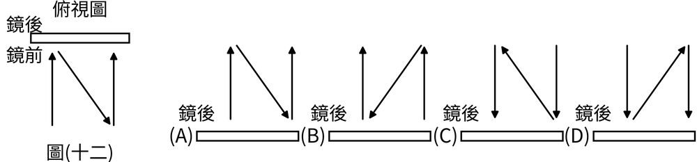
看答案與詳解
答案：(D)
原走位：① 左側由遠處走向鏡子 → 像在左側，由鏡後遠處「走向」鏡面（選項圖中向下）。
② 斜線由鏡前近處（左）走到遠處（右）→ 像由鏡面附近（左）斜向鏡後遠處（右），即向右上。
③ 右側由遠處走向鏡子 → 像也是向下走向鏡面。
符合「下、右上、下」的是 (D)。
〔易錯〕平面鏡的像不會上下顛倒，前後（離鏡遠近）對稱
西元 3035 年，外星人大舉攻擊地球，小華參與其中的戰役。一日小華發現了躲在柱子後面的外星人，如右圖，若他想利用鏡面反射原理以雷射光束擊中這名外星人，則小華瞄準甲～丁哪一點最可能擊中外星人？
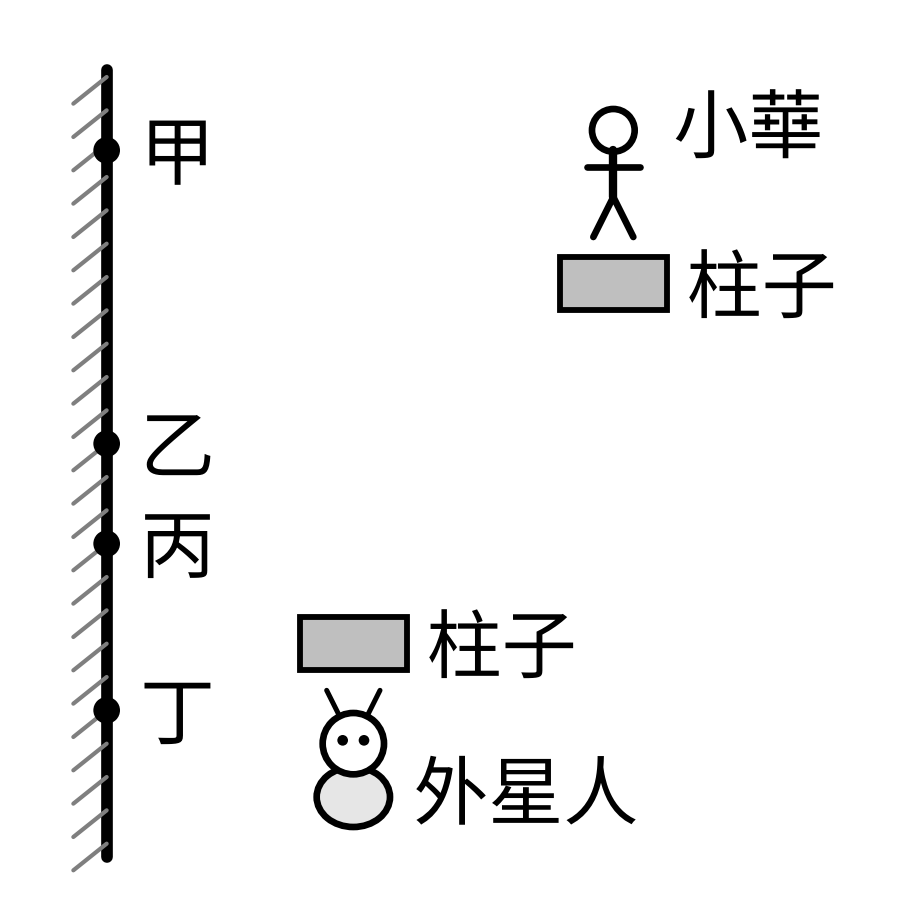
- (A) 甲
- (B) 乙
- (C) 丙
- (D) 丁
看答案與詳解
答案：(C)
雷射光經鏡面反射後會射向外星人，相當於雷射光「射向外星人的像」。
連接小華與外星人的像，與鏡面的交點就是要瞄準的點。小華離鏡較遠、位置較高，外星人離鏡較近、位置較低，交點在兩者高度之間偏下 → 最接近丙 → (C)。
也可用反射定律檢查：在丙點入射角＝反射角，光路恰好繞過兩根柱子。
以一單色光束射入一不均勻的透光物質，可觀察到光的前進路線如右圖所示，則下列相關敘述何者錯誤？
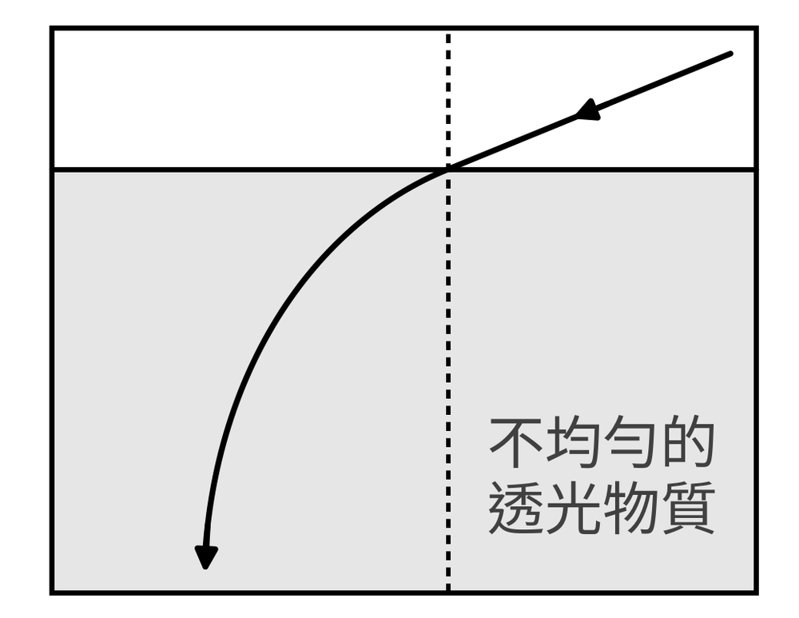
- (A) 光雖然可以通過透光物質，但光的傳播也可以不需要介質
- (B) 光在不均勻物質中轉彎，是因為光的折射
- (C) 可觀察到光的前進路線，是因為光的反射
- (D) 光在不均勻物質中前進時，前進的速率越來越快
看答案與詳解
答案：(D)
(B) ✔ 物質不均勻，光速逐漸改變，光線一路偏折（連續的折射）而彎曲。
(C) ✔ 光路上的微粒把部分光反射（散射）進我們的眼睛，才看得見光的路徑。
(D) ✘ 由圖，光線愈來愈偏向法線（愈來愈接近鉛直）→ 由快介質進入慢介質的特徵 → 速率愈來愈慢。
本題選錯誤的敘述 → (D)。
小明想利用陽光與放大鏡點燃火柴，圖（十一）所示，他先利用放大鏡觀察到正立放大的火柴影像後，放大鏡往某個方向移動使陽光會聚於火柴上，並於數秒後順利點燃火柴。圖（十二）為此放大鏡鏡前的 5 個點，其中 F 為焦點、R 為兩倍焦距處，小明由觀察到正立放大的火柴影像開始，到點燃火柴的過程中，由於放大鏡的移動，火柴所在位置變化可能為下列何者？
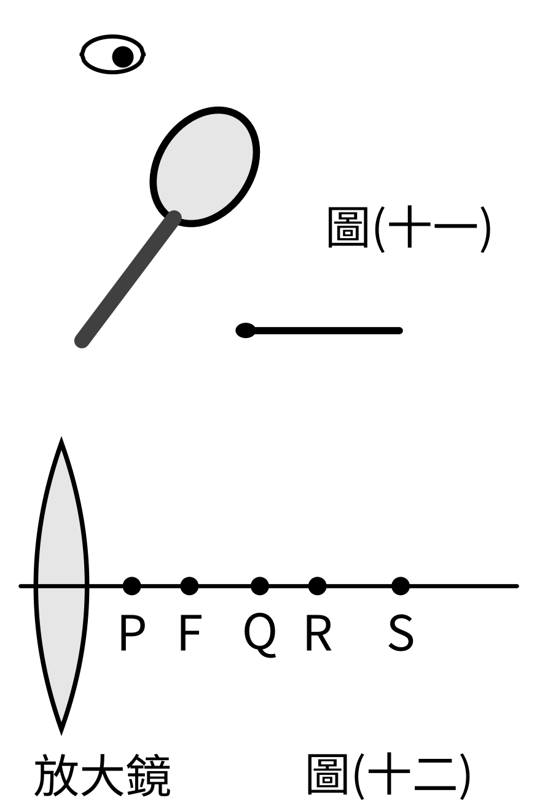
- (A) 一開始位於 P，後來位於 F
- (B) 一開始位於 R，後來位於 F
- (C) 一開始位於 S，後來位於 F
- (D) 一開始位於 Q，後來位於 R
看答案與詳解
答案：(A)
② 陽光是平行光，經凸透鏡會聚於焦點 → 要點燃火柴，火柴必須位於焦點 F。
故由 P 變到 F → (A)。
(B)(C) ✘ R、S 在焦距外，看到的是倒立實像，不是正立放大。
(D) ✘ Q 在 F～2F，看到倒立放大實像；R 也不是陽光會聚的位置。
小文自創一套色彩代碼，他利用表(五)中五個簡單符號的組合來表示顏色。若某物品可反射紅光，則下列四個選項中，何者可能為此物品的符號？
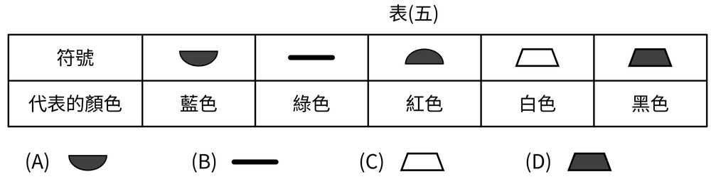
看答案與詳解
答案：(C)
能反射紅光的物品：紅色或白色（或含紅光成分的顏色，如黃、洋紅）。
(A) ✘ 藍色：只反射藍光。
(B) ✘ 綠色：只反射綠光。
(C) ✔ 白色：反射所有色光，包含紅光。
(D) ✘ 黑色：吸收所有色光。
小蘭做凸透鏡成像實驗，裝置如圖(十六)。若不同物距 X，分別在紙屏上成像結果如表(六)，則此凸透鏡的焦距可能為多少公分？
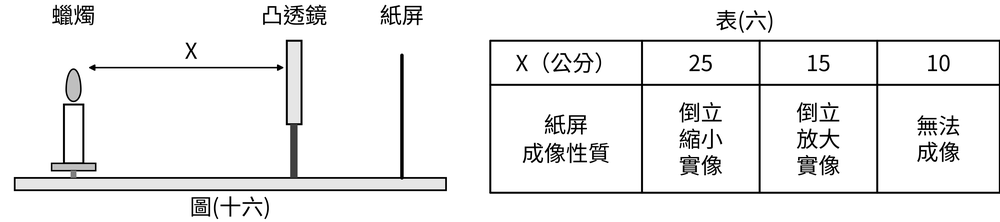
- (A) 9
- (B) 12
- (C) 14
- (D) 16
看答案與詳解
答案：(B)
① X＝25 cm 成倒立縮小實像 → 物在 2f 外：25＞2f → f＜12.5。
② X＝15 cm 成倒立放大實像 → 物在 f～2f：f＜15＜2f → 7.5＜f＜15。
③ X＝10 cm 紙屏上無法成像 → 物在焦點上或焦距內：10≦f。
綜合：10≦f＜12.5 → 只有 12 符合 → (B)。
〔易錯〕忽略 ③ 而誤選 9
會考／素養題
太陽能是一種再生能源，其中一種太陽能發電方式是使用如圖(二十五)所示的拋物面碟式收集器來收集太陽能。圖中的反射器可使太陽光會聚於接收器，加熱流經接收器內部的物質，進而達到發電的目的。圖(二十六)為接收器內部構造的示意圖，其內部為一個不鏽鋼管，外罩一個玻璃外殼，玻璃外殼與不鏽鋼管之間為真空部分，真空部分可有效的減少熱量的損失與管壁的氧化。
圖(二十五)中的入射光線經反射器反射後照射於接收器上，則此時法線應為圖上的哪一條虛線？
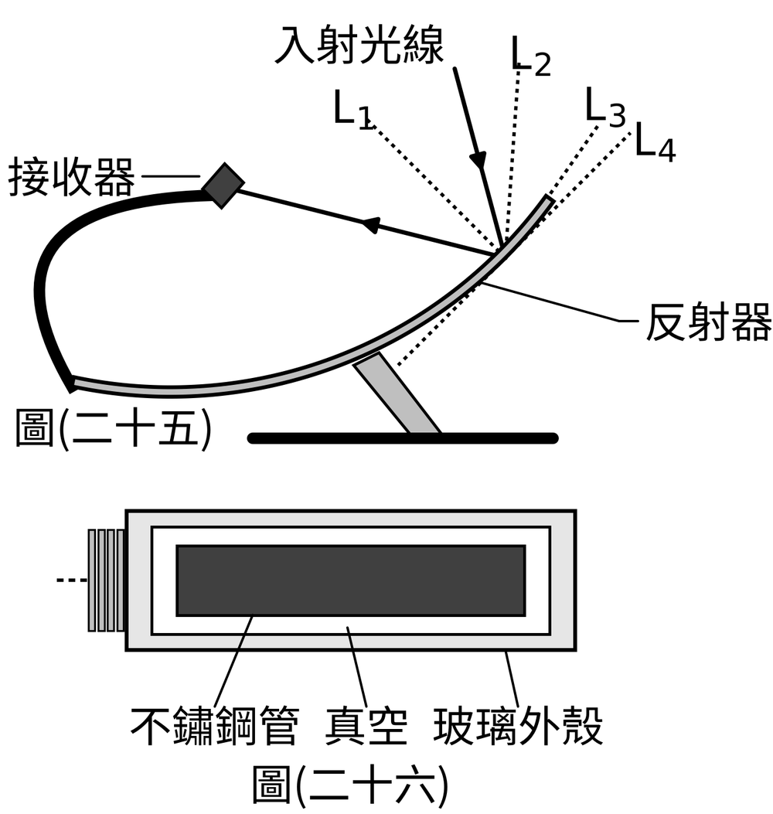
- (A) L1
- (B) L2
- (C) L3
- (D) L4
看答案與詳解
答案：(A)
入射光由上方射到反射器，反射光射向左上方的接收器；位於兩者正中間、且與反射器表面垂直的虛線是 L1 → (A)。
(B) ✘ L2 靠近入射光，與入射光、反射光的夾角不相等。
(C) ✘ L3 在入射光的另一側。
(D) ✘ L4 幾乎沿著反射器表面（切線方向），與法線垂直。
竹筍是一種常見的食材，竹筍帶有苦味是因為含有化合物 X，若化合物 X 在酵素參與下和水反應，產物之一為有毒的氫氰酸（HCN），可避免被動物取食，是植物本身的一種保護機制。當竹筍從地下莖冒出土，筍尖被陽光照射後會轉為綠色，俗稱「出青」。竹筍的尖端嫩芽，尤其是出青的竹筍嫩芽，含有較多的化合物 X，所以此部位更易帶有苦味。有鑒於此，農民常在竹筍生長處事先覆蓋土壤或使用其他方式，以避免竹筍出青，對品質和口感帶來影響。
上述農民「使用其他方式」，最可能是下列何者？
- (A) 在竹筍生長處覆蓋透明塑膠布，每日陽光較弱時採收
- (B) 在竹筍生長處覆蓋透明塑膠布，每日陽光較強時採收
- (C) 在竹筍生長處覆蓋黑色塑膠布，每日陽光較弱時採收
- (D) 在竹筍生長處覆蓋黑色塑膠布，每日陽光較強時採收
看答案與詳解
答案：(C)
覆蓋：透明塑膠布會讓光穿透，仍會出青；黑色塑膠布吸收所有色光、不透光 → 選黑色。
採收：採收時竹筍必須掀開覆蓋暴露在陽光下，選陽光較弱的時候（如清晨）採收，可減少出青 → (C)。
桌面上由左至右擺放著紅色、白色、綠色三張相鄰的圖卡，左端放置一平面鏡與桌面垂直，圖卡間相鄰位置與平面鏡上 P 點的角度關係，如圖所示。今將藍色光線以入射角 X 度入射在平面鏡 P 點，看見光線反射後落在圖卡上形成藍色光點，依上述條件推論，下列何者最可能為 X 的數值？
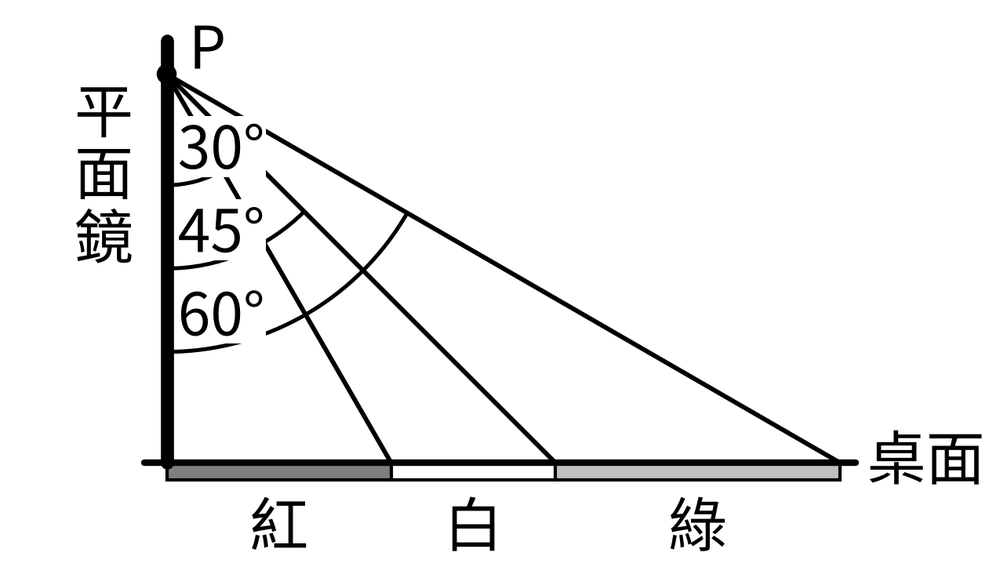
- (A) 35
- (B) 40
- (C) 50
- (D) 75
看答案與詳解
答案：(C)
② 白卡位置：反射光與鏡面的夾角在 30°～45° 之間。
③ 平面鏡的法線是水平線，反射角＝90°－（反射光與鏡面的夾角）→ 反射角在 45°～60° 之間。
④ 入射角＝反射角 → 45＜X＜60 → 只有 50 符合 → (C)。
〔易錯〕圖上的角度是與「鏡面」的夾角，不是與法線的夾角
小葛利用甲乙丙三支不同的透鏡來觀察蜜蜂，且蜜蜂與透鏡的距離皆為 20cm，他看到的情形如圖（十八）所示，下列敘述何者正確？
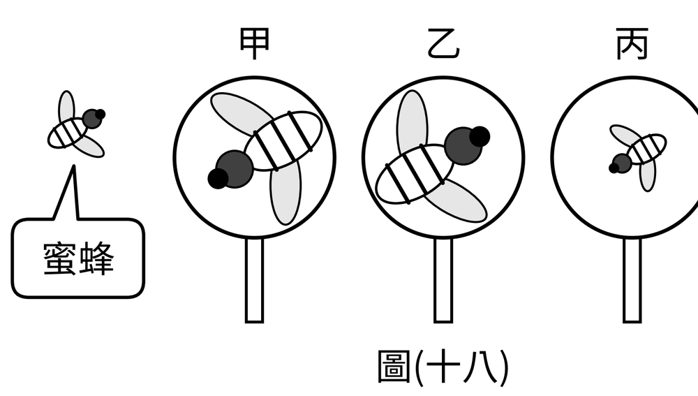
- (A) 將甲透鏡漸漸遠離蜜蜂，將會看到「倒立蜜蜂」逐漸變大
- (B) 甲、乙透鏡為凸透鏡，丙透鏡可能為凹透鏡
- (C) 乙透鏡可以用來製成近視眼鏡的鏡片
- (D) 丙透鏡的焦距約為 10cm
看答案與詳解
答案：(D)
甲：倒立放大實像 → 凸透鏡，物在 f～2f：f＜20＜2f。
乙：正立放大虛像 → 凸透鏡，物在焦距內：f＞20。
丙：倒立等大實像 → 凸透鏡，物在 2f 上：2f＝20 → f＝10 cm。
(A) ✘ 甲透鏡遠離蜜蜂，物距變大，倒立的實像變小。
(B) ✘ 丙看到倒立的像，一定是凸透鏡。
(C) ✘ 乙是凸透鏡，近視眼鏡用凹透鏡。
(D) ✔ 丙的焦距約 10 cm。
下圖(一)為兩個大小不同的三角形上下排列的圖形，阿達分別使用甲、乙兩個不同的透鏡觀察圖形，已知鏡面大小較圖形大，透過透鏡看到的影像結果如下圖(二)所示。若想看到圖(三)的影像結果，可以如何操作？
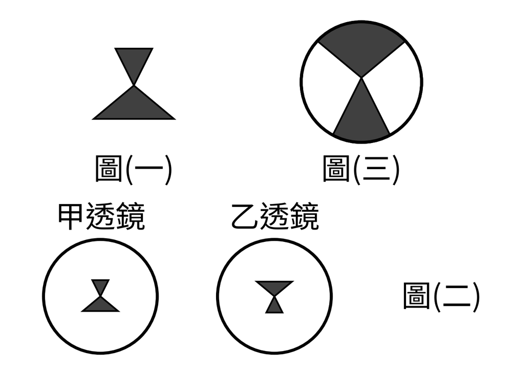
- (A) 將甲透鏡逐漸靠近圖形
- (B) 將甲透鏡逐漸遠離圖形
- (C) 將乙透鏡逐漸靠近圖形
- (D) 將乙透鏡逐漸遠離圖形
看答案與詳解
答案：(C)
甲透鏡：看到上小下大、比原圖小 → 正立縮小 → 凹透鏡（不論怎麼移動都只成正立縮小虛像）。
乙透鏡：看到上大下小（上下顛倒）且縮小 → 倒立縮小實像 → 凸透鏡，圖形在 2F 外。
圖(三)：上大下小（倒立）且放大 → 凸透鏡的倒立放大實像 → 圖形要移到 F～2F 之間。
乙透鏡逐漸靠近圖形（物距由 2F 外變小到 F～2F），倒立的像逐漸變大 → (C)。
(A)(B) ✘ 凹透鏡看不到倒立的像。(D) ✘ 乙透鏡遠離，像更小。
智新設計實驗來模擬近視眼及其矯正後的情形，其步驟如圖所示：（此實驗設計有一個錯誤）
步驟 1. 模擬正常視力眼睛的成像情形：以凸透鏡甲表示水晶體，屏幕表示視網膜，調整適當位置使其在屏幕上成像清晰。
步驟 2. 模擬近視眼的成像情形：在凸透鏡甲的位置改放凹透鏡乙，表示近視眼睛的水晶體，凹透鏡乙與凸透鏡甲的焦距相同，屏幕上成像模糊。
步驟 3. 模擬矯正近視眼：挑選適當的凹透鏡丙，表示矯正用的近視眼鏡，放置在凹透鏡乙與蠟燭之間的固定位置，使其在屏幕上成像清晰。
關於修正此錯誤的方式，下列何者最適當？
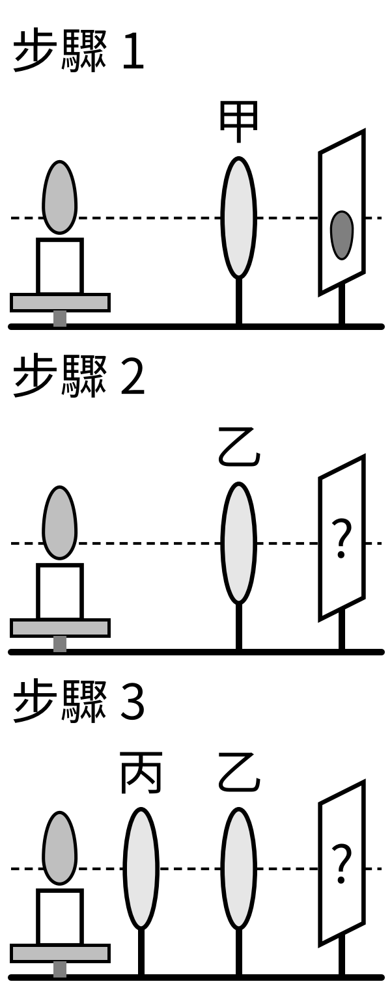
- (A) 將實驗中的凹透鏡乙改為焦距較甲短的凸透鏡
- (B) 將實驗中的凹透鏡乙改為焦距較甲長的凸透鏡
- (C) 將實驗中的凹透鏡丙改為適當焦距的凸透鏡
- (D) 將步驟 3 中的凹透鏡丙改位置在凹透鏡乙與屏幕之間
看答案與詳解
答案：(A)
錯誤在步驟 2：用凹透鏡乙代表水晶體不對（凹透鏡在屏幕上根本無法成像）。
應改為「焦距比甲短的凸透鏡」，像會成在屏幕前方 → 屏幕上模糊，再用凹透鏡丙（近視眼鏡）先把光發散來矯正 → (A)。
(B) ✘ 焦距較長的凸透鏡會使像落在屏幕後方，模擬的是遠視。
(C) ✘ 近視眼鏡本來就該用凹透鏡，丙不必改。
(D) ✘ 眼鏡戴在眼睛前方（蠟燭與水晶體之間），位置沒有錯。
老師在螢幕上投影出一張彩色圖片，讓同學分別透過紅色玻璃紙和綠色玻璃紙觀看，結果如圖(十)、圖(十一)所示，則下列何者最可能為原來的彩色圖片？
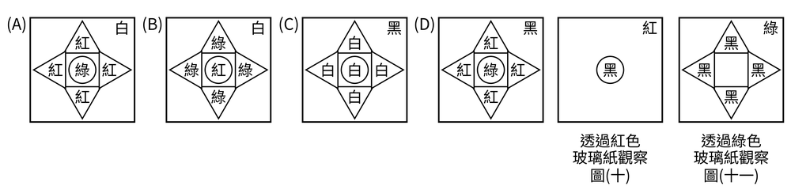
看答案與詳解
答案：(A)
圖(十)：背景與四個三角形都呈紅色（看不出形狀），圓形呈黑色。
圖(十一)：背景與圓形都呈綠色，四個三角形呈黑色。
① 背景：紅紙下呈紅、綠紙下呈綠 → 白色。
② 三角形：紅紙下呈紅、綠紙下呈黑 → 紅色。
③ 圓形：紅紙下呈黑、綠紙下呈綠 → 綠色。
白底、紅三角形、綠圓形 → (A)。